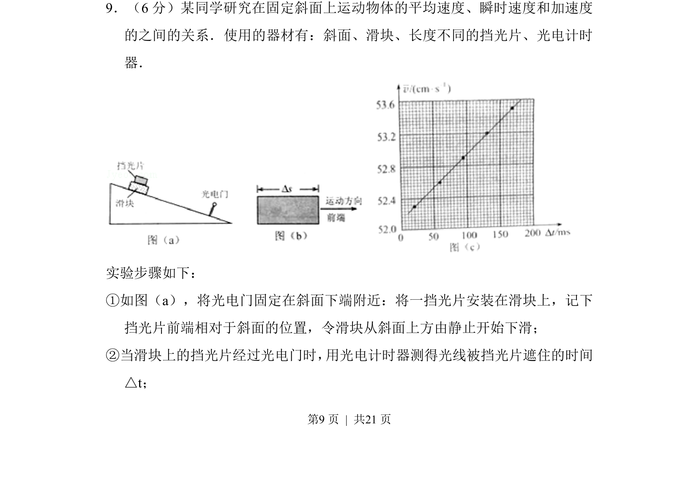
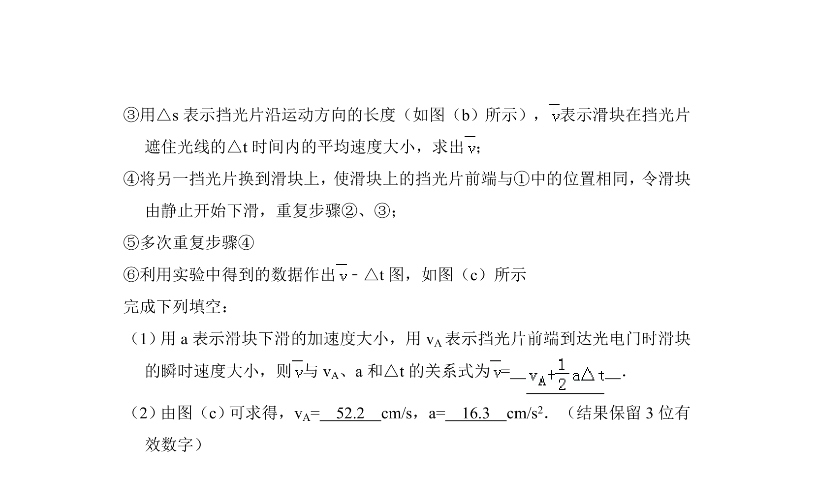
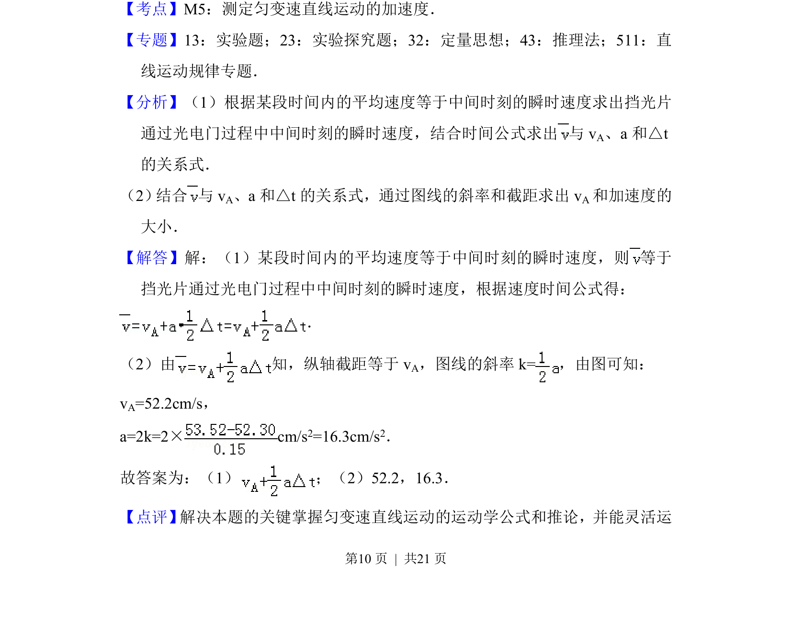
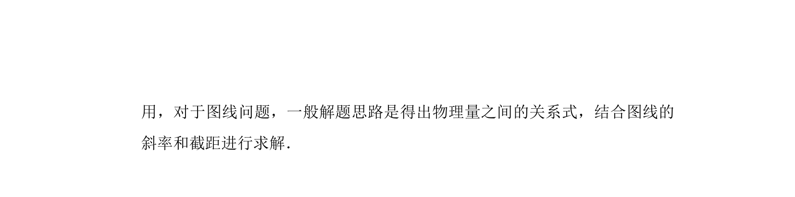

考点：运动学 匀变速直线运动 实验题 平均速度


斜面上用挡光片和光电门测不同时间内平均速度，利用v̄-Δt图线斜率和截距求瞬时速度和加速度。


📄 原 PDF 第 9 页：
素材/真题/吉林/2008-2024·（吉林）物理高考真题/2017年高考物理试卷（新课标Ⅱ）（解析卷）.pdf
9．（6分）某同学研究在固定斜面上运动物体的平均速度、瞬时速度和加速度 的之间的关系．使用的器材有：斜面、滑块、长度不同的挡光片、光电计时 器． 实验步骤如下： ①如图（a），将光电门固定在斜面下端附近：将一挡光片安装在滑块上，记下 挡光片前端相对于斜面的位置，令滑块从斜面上方由静止开始下滑； ②当滑块上的挡光片经过光电门时， 用光电计时器测得光线被挡光片遮住的时间 △t；